Capítulo 1
Kodoku no Yami – 孤独の闇 é uma experiência interativa de horror psicológico e mistério, feita para rodar diretamente no navegador. Um jogo point and click visual onde cada clique pode revelar segredos ocultos, histórias esquecidas e verdades que talvez fosse melhor não conhecer.
Aqui, exploramos lendas urbanas, relatos reais e mistérios da internet japonesa, sempre com respeito às histórias e às pessoas envolvidas. Nenhuma imagem gráfica ou explícita será usada, mas a atmosfera sombria e a narrativa envolvente podem causar desconforto—afinal, o medo muitas vezes está nas entrelinhas.
Prepare-se para uma jornada onde a solidão encontra a escuridão, e cada decisão pode levar a diferentes desfechos. Você está pronto para desvendar os mistérios que se escondem nas sombras?
Disclaimer: Algumas imagens utilizadas são retiradas de fontes da internet, devidamente creditadas sempre que possível. Caso alguma imagem esteja sob direitos autorais e precise ser removida ou ajustada, entre em contato conosco.